Operating Documentation
Direction 5133330-3, Rev# 14
Signa EXCITE HD 3.0T Service Methods
Module Version 3.0, Version Date 12/5/07
Operating Documentation |
| ||||
| Review Table 1 and Table 2 before proceeding to ensure that the correct Daylight Saving Time (DST) update is applied. If none of these apply, proceed to Section 1. | ||||
Table 1: Daylight Saving Time (DST) for System Type
| System Type | If the following software version is installed: | Then: |
HDx (14.x) HDx (12.x) | 14 M5 12 M5A | Ensure correct local time zone and date and time are set. Otherwise, no further action is required. |
| Excite (11.x) | 11.1 | Ensure correct local time zone and date and time are set. Otherwise, no further action is required. |
Lx (9.x) HFO3 | 9.1 M4A HFO3 M4 SP2 | Ensure correct local time zone and date and time are set. Otherwise, no further action is required. |
E2 G3 | E2 M4 SP3 M4B SP3 | After installing the service pack, reset the correct local time zone and date and time regardless of current setting. |
Section 1 - Overview
Section 2 - Determine the Time Zone UTC Value
Section 3 - Excite HD 12.x and HDx (14.x) Systems (Signa Excite HD, Signa HDx, Signa HDe, Signa OpenSpeed, Signa Excite Profile 5, Signa Excite Profile HD, Signa Excite Ovation 5)
Section 4 - Excite (11.x), 9.x and 8.x Systems (Signa Lx, Signa Lx Horizon, Signa 3.0T, Signa Excite 1.5T and 3.0T, Signa Ovation, Signa Open Speed HFO3 and HFO4)
Section 5 - Procedure for Genesis 5.x Systems (Signa Advantage and Signa Horizon)
Section 6 - Procedure for Contour/Profile 7.xx Systems
Congress passed the Energy Policy Act of 2005 that changes when Daylight Saving Time takes effect. Without any action, the MR system clock settings will be off by one hour for three weeks starting March 11, 2007 and, again, for one week starting October 28, 2007. (See Table 2.) If not corrected, this situation will cause incorrect times to be posted on patient exams.
This document will lead the engineer through the procedures necessary to adjust the MR system clock settings to accommodate for the revised Daylight Saving Time schedule. This procedure needs to be done every March (second Sunday) and November (first Sunday) or as close as possible to these dates. This is a manual adjustment of the system for Daylight Saving Time. Once this procedure is performed, the new time is set and displayed on the system.
| NOTE: | From this point forward, this procedure needs to be performed twice per year: in March, using the Daylight Saving Coordinated Universal Time (UTC) and in November, using the Standard Time UTC. |
Table 2: When to Start and End DST
| Previously DST started on: | With the new law, DST starts: | Previously DST ended on: | With the new law, DST ends: | |
|---|---|---|---|---|
| Generic Timeframe beginning in 2007 | First Sunday of April | Second Sunday of March | Last Sunday of October | First Sunday of November |
| Section 3 | Section 5 | Section 6 |
|---|---|---|
| Signa Excite HD 1.5 and 3.0T | Signa Advantage | Contour 7.x |
| Signa HDx 1.5 and 3.0T | Signa Horizon | Profile 7.x |
| Signa HDe | ||
| Signa OpenSpeed (HFO5) | ||
| Signa Excite Profile 5 | ||
| Signa Excite Ovation 5 | ||
| Signa Excite Profile HD |
One person for one hour.
Service documents appropriate for the product type.
Operator documents appropriate for the product type.
| ||||
| Obtain the Root login password before starting this procedure. | ||||
Contact your local site IT Administrator, local GE Healthcare Field Engineer, or GE Cares Center to obtain the password.
In this section, you will determine the Daylight Saving Time and standard time equivalent Coordinated Universal Time (UTC) value using the local time zone for the location of your system. The UTC is sometimes referred to as Greenwich Mean Time (GMT) . The UTC values listed in Table 3 are the time (in hours) your system is west of Greenwich Mean Time.
Table 3: Time Zones Not Affected by DST Change
| Country | Time Zone | Standard Time | ||
|---|---|---|---|---|
| United States | Eastern Standard Time* | UTC-5 | ||
| United States | Mountain Standard Time* | UTC-7 | ||
| United States | Hawaii | UTC-10 | ||
| Canada | Central Standard Time* - Saskatchewan (most locations) | UTC-6 | ||
| Canada | Mountain Standard Time* -Dawson Creek and Fort Saint John, British Columbia | UTC-7 | ||
* Eastern/Central/Mountain Standard Time (does not change) is not the same as Eastern/Central/Mountain Time (where DST applies). | ||||
Please review the time zones in Table 3. Systems installed in any of these five time zones are configured correctly, and will not need further action.
Locate the proper time zone for the system to be adjusted in Table 4, and note the offset values in the space provided at the bottom of the same table.
Example: In Table 4, Eastern Time has a DST value of UTC-4 or four hours west of UTC, and a Standard Time value of UTC-5 or five hours west of UTC.
Table 4: UTC Adjustment Table
| Country | Time Zone | DST Equivalent | Standard Time |
|---|---|---|---|
| United States | Eastern Time | UTC-4 | UTC-5 |
| United States | Central Time | UTC-5 | UTC-6 |
| United States | Mountain Time | UTC-6 | UTC-7 |
| United States | Pacific Time | UTC-7 | UTC-8 |
| United States | Alaska Time | UTC-8 | UTC-9 |
| United States | Aleutian Time | UTC-9 | UTC-10 |
| Canada | Newfoundland Island | UTC-2.5 | UTC-3.5 |
| Canada | Atlantic Time - Nova Scotia (most locations) | UTC-3 | UTC-4 |
| Canada | Atlantic Time - Northwest Territories | UTC-3 | UTC-4 |
| Canada | Eastern Time - Ontario and Quebec (most locations) | UTC-4 | UTC-5 |
| Canada | Eastern Time - Thunder Bay, Ontario | UTC-4 | UTC-5 |
| Canada | Eastern Time - Northwest Territories | UTC-4 | UTC-5 |
| Canada | Central Time - Manitoba and West Ontario | UTC-5 | UTC-6 |
| Canada | Mountain Time - Alberta, East British Columbia, and West Saskatchewan | UTC-6 | UTC-7 |
| Canada | Mountain Time - Northwest Territories | UTC-6 | UTC-7 |
| Canada | Pacific Time - West British Columbia | UTC-7 | UTC-8 |
| Canada | Pacific Time - Yukon | UTC-7 | UTC-8 |
| Bahamas | Bahamas | UTC-4 | UTC-5 |
Record the Site Name and UTC values here: Site Name: _______________________________________ Daylight Saving Time UTC: _________________________ (Used in March) Standard Time UTC: _______________________________ (Used in November) | |||
| NOTE: | The Guided Install screens vary slightly on these systems. However, the procedure is exactly the same for each. |
On the Applications screen displays, click the Tools icon to display the MR Service Desktop Manager shown in Illustration 1.
Illustration 1: Guided Install Home Page
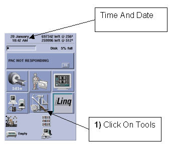
From the MR Service Desktop Manager, click the [Guided Install] button. (See Illustration 2.)
Double-click the GI: FE mode item displayed in the Service Desktop Manager list window shown in Illustration 2.
When the root password window (shown in Illustration 2 on the right) opens, enter the password provided by the local GE Field Engineer or others listed in Section 1.4, and press <Enter>. This action launches the Guided Install Tool.
Illustration 2: Guided Install Tool
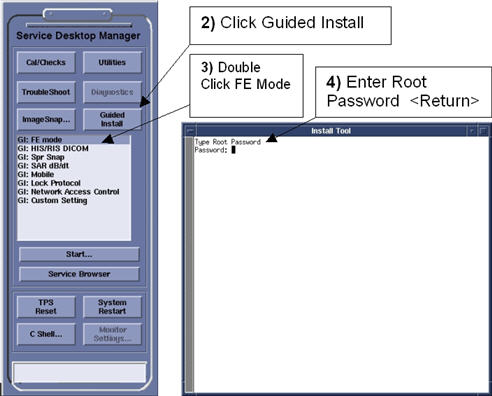
Click the Set Time/Date item on the left in the Guided Install Tool dialog box. (See Illustration 3.)
In the Set Time/Date window, expand the Universal item, and then select West of UTC. A list of times west of UTC display. (See Illustration 3.)
Select the matching UTC offset value. (See Illustration 3.)
Illustration 3: Set Time/Date Menu
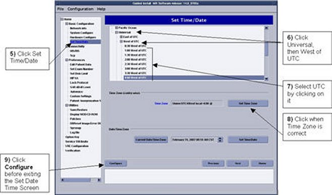
The example in Illustration 3 shows the setting for United States Eastern Time, UTC-4.
Click [Set Time Zone] to save the new UTC offset value.
If the [Configure] button is enabled, click it. (Depending on your system, it may or may not be enabled.)
Right-click on the screen's background to refresh, and go to Root Menu → Service Tools → System Restart. (See Illustration 4.)
Click [Yes] when the pop-up (shown in Illustration 4) displays to confirm the restart.
Illustration 4: Restart System
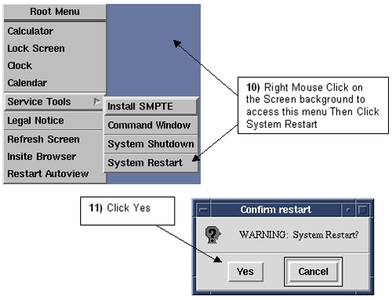
| NOTE: | The system Time/Date cannot be set until the following system restart is completed because during the first system restart, the Time/Date may change by a multiple of the UTC value selected above. |
Proceed as follows to set the Time/Date after the system reboots.
When prompted during the restart, log in again as root. Type in the root password provided by the local GE Healthcare Field Engineer or others listed in Section 1.4, and press <Enter>.
Click [Yes] when the Guided Install Starter screen (shown in Illustration 5) asks, Would you like to invoke Guided Install and reconfigure MR Scanner?.
Illustration 5: Invoke Guided Install
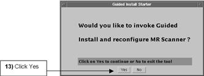
Notice that the Guided Install home page (shown in Illustration 6) opens.
Illustration 6: Guided Install Home Page
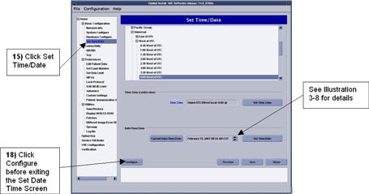
Click the Set Time/Date tab in the left window of the Guided Install home page. (See Illustration 6.)
Set the current date and local time. (In all likelihood, the time listed will be different from either Standard or Daylight Saving Time.) Click the hour field to adjust in the date time window to highlight it, and use the arrow keys to adjust the value up or down. (See Illustration 7.)
If you are changing the system time to Daylight Saving Time before the second Sunday in March, use the up-arrow to set the time +1 hour from current time. If you are making the change after the second Sunday in March, set the current time.
If you are changing the system time back to Standard Time before the first Sunday in November, use the up-arrow to set the time -1 hour from current time. If you are making the change after the first Sunday in November, set the current time.
(See Table 6.)
Illustration 7: Set Date
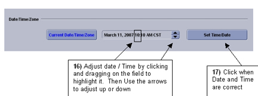
When date and time settings are correct, click [Set Time/Date]. (See Illustration 7.)
If the [Configure] button is enabled, click it. (Depending on your system, it may or may not be enabled.)
Select File → Quit (shown in Illustration 8) to close the Guided Install Tool window.
Illustration 8: Quit Guided Install Tool
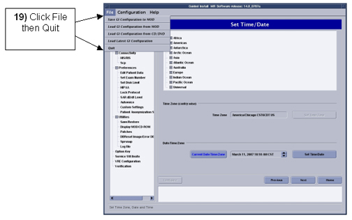
Click [Yes] when the Really want to quit? message box (shown in Illustration 9) displays.
Illustration 9: Click Yes to Quit
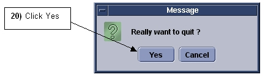
Right-click anywhere on the screen to refresh, and select Root Menu → Service Tools → System Restart shown in Illustration 10.
Illustration 10: Restart Scanner
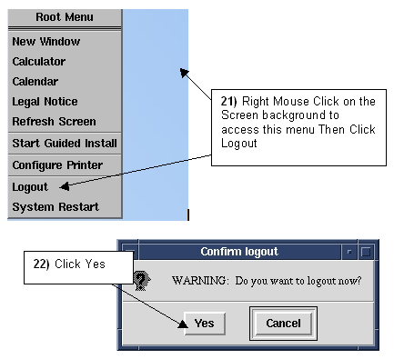
Click [Yes] in the pop-up that displays to confirm the restart. (See Illustration 10.)
Follow the normal system login procedure, and verify the system time is correct. (See Illustration 11.)
Illustration 11: Check Set Time
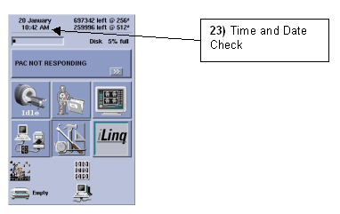
| NOTE: | If this procedure was performed before the required date, the system time will be +1 hour in March and -1 hour in November to compensate for the upcoming time change. |
| NOTE: | The Guided Install screens vary slightly on these systems, but the procedure is exactly the same for each. |
From the Applications screen, click the Tools icon to display the MR Service Desktop Manager. (See Illustration 12.)
Illustration 12: Open MR Service Desktop Manager
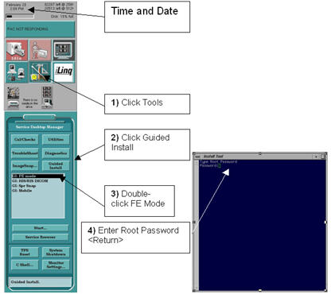
From the MR Service Desktop Manager, click [Guided Install]. (See Illustration 12.)
Double-click FE Mode, which is displayed in the Service Desktop Manager list, shown in Illustration 12.
When the root password window (shown in Illustration 12) opens, enter the password provided by the local GE Healthcare Field Engineer or others listed in Section 1.4, and press <Enter>. This launches the Guided Install module. (See Illustration 13.)
Illustration 13: Guided Install Window
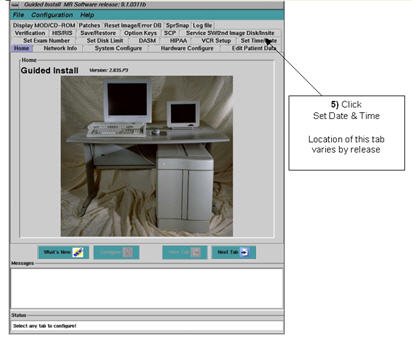
Click the Set Time/Date tab at the top of the Guided Install screen. (See Illustration 13.)
Select Universal, and West of UTC. A list of times west of UTC displays. (See Illustration 14.)
Illustration 14: UTC Time Zone Selection
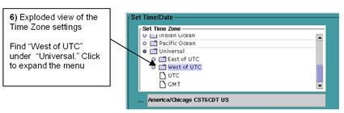
Select the proper UTC offset value. (See Illustration 15.)
Illustration 15: UTC Offset Selection
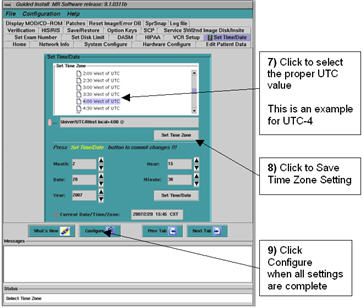
| NOTE: | The example in Illustration 15 shows the setting UTC-4 (four hours west of UTC). |
Click [Set Time Zone] to save the new UTC offset value.
When a confirmation window (shown in Illustration 15) displays, click [OK]. Proceed to reboot the system and save the settings.
If the [Configure] button is enabled, click it. (Depending on your system, the button may or may not be available.) Illustration 15 may display again.
Make sure the Film Composer and Archive processes are inactive before shutting the system down.
From the Service Desktop Manager, click [System Shutdown]. (See Illustration 16.)
Illustration 16: System Shutdown
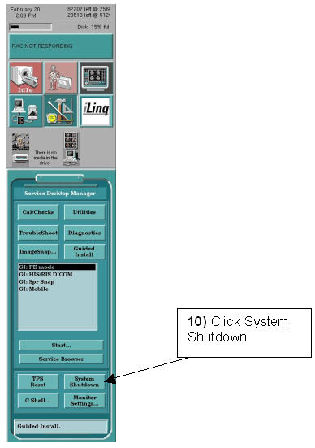
Illustration 17: Confirm Shutdown
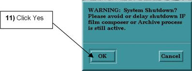
Click [OK] in the pop-up that displays to confirm the shutdown. (See Illustration 17.)
| NOTE: | System Time/Date cannot be set until system restart is completed because during the first system restart, the Time/Date may change by a multiple of the UTC value selected above. |
Depending on your system type, another confirmation message may display. Press any key on the keyboard to restart the system.
Follow these steps to set the Time/Date after the system reboots:
When prompted during the restart, login again as root. Type in the root password provided by the local GE Healthcare Field Engineer or others listed in Section 1.4, and press <Enter>.
Click [Yes] when the Guided Install Starter (shown in Illustration 18) asks, Would you like to invoke Guided Install and reconfigure MR Scanner?
Illustration 18: Start Guided Install
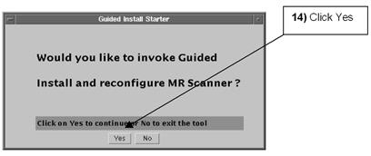
Look for the Guided Install home page (shown in Illustration 19) to display.
Illustration 19: Guided Install Home Page
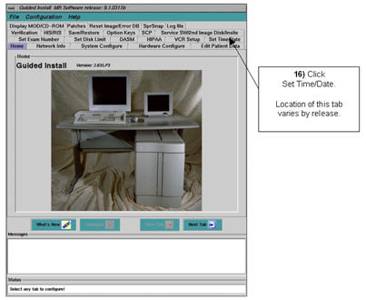
Click the Set Time/Date tab at the top of the Guided Install screen. (See Illustration 20.)
Illustration 20: Date and Time Tab
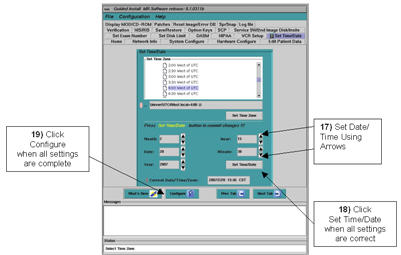
Set the current date and local time. (In all likelihood, the time listed will be different from either standard or daylight time.) Click the hour field in the date/time window to highlight it, and use the up and down arrow keys to adjust the time. (See Table 6.)
If you are changing the system time to Daylight Saving Time before the second Sunday in March, use the up-arrow to set the time +1 hour from current time. If you are making the change after the second Sunday in March, set the current time.
If you are changing the system time back to Standard Time before the first Sunday in November, use the down-arrow to set the time -1 hour from current time. If you are making the change after the first Sunday in November, set the current time.
When date and time settings are correct, click the [Set Time/Date] button.
If the [Configure] button is enabled, click it. (Depending on your system, it may or may not be available.)
Select File → Quit (shown in Illustration 21) to close the Guided Install window.
Illustration 21: Close Guided Install Window
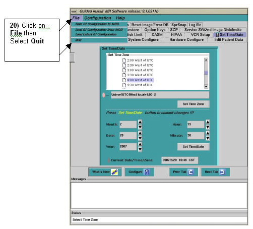
Click [Yes] when the confirmation window displays.
Right-click anywhere on the screen to refresh, and select Desk Top → Log Out.
Click [Yes] in the confirmation window to restart.
Follow the normal system login procedure, and verify the system time is correct. (See Illustration 22.)
Illustration 22: Verify Correct System Time
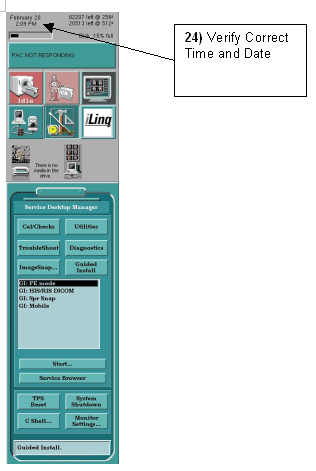
| NOTE: | If this procedure was performed before the required date, the system time will be +1 hour in March and -1 hour in November to compensate for the upcoming time change. |
With the Applications screen displayed at the Operator Console, press <L1> and <B> on the keyboard.
| NOTE: | The <Enter> key may need to be pressed to display the login prompt. |
When the system displays the login prompt, type root and press <Enter>.
When the system displays password:, type the root password provided by your local GE Healthcare Field Engineer or others listed in Section 1.4, and press <Enter>.
(See Section 1.4 for password information.)
When the system prompt displays, type timezone and press <Enter>. The following displays:
The system is currently set up in the “yyyyyy” timezone.
Is this correct (yY|nN) [y]?
| NOTE: | yyyyyy = The same time zone currently set. |
Type n for no, and press <Enter>. The following displays:
Type 8, and press <Enter>. The following displays: 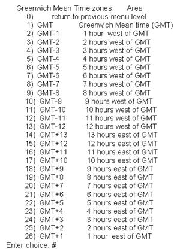
Type the number corresponding to your choice, which should be the UTC offset value you recorded in Section 1.4.
| NOTE: | The number entered should be between 4 and 12. |
With the Applications screen displayed at the Operator Console, press the <L1> and <B> keys.
At the Operator Console, select Utilities → Operator Mode → Shutdown.
Click [Yes] in the confirmation window to the shut down the system.
Follow the normal system boot procedures, referring to the System Operator Manual as necessary.
When the system completes the boot process, verify the proper date and time displayed in the top center box of the Operator Console. If the time and date are correct, you are finished. Otherwise, proceed to the next steps.
| NOTE: | If this procedure was performed before the required date, the system time will be +1 hour in March and -1 hour in November to compensate for the upcoming time change. |
With the Applications screen displayed at the Operator Console, press the <L1> and <B> keys.
When the system displays the login prompt, type root and press <Enter>.
When the system displays password:, type the root password provided by your local GE Healthcare Field Engineer or others listed in Section 1.4, and press <Enter>.
(See Section 1.4 for password information.)
Type date at the system prompt, and press <Enter>.
The system returns: Thu Feb22 14:34 GMT-0500 2007.
To change the date and time, enter the date in mmddhhmm format.
Example: For Feb 22, 2:34 p.m., type 02231434 (based on a 24-hour clock).
mm is 2-digit month, dd is 2-digit day, hh is 2-digit hour, and mm is 2-digit minute.
At the Operator Console, press the <L1> and <B> keys.
At the Operator Console, select Utilities → Operator Mode → Shutdown.
Click [Yes] in the confirmation window to the shut down the system.
Follow the normal system boot procedures, referring to the System Operator Manual as necessary.
When the system completes the boot process, verify the proper date and time displayed in the top center box at the Operator Console.
From the Applications screen, click the Tools icon to display the MR Service Desktop Manager. (See Illustration 23.
Illustration 23: Start Service Desktop Manager
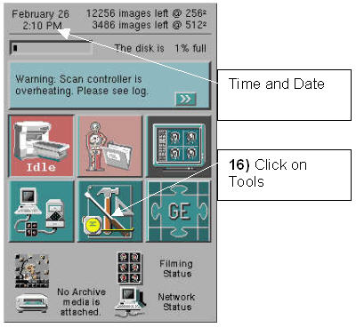
Right-click on the screen background, and select Service Tools and Command Window (shown in Illustration 24 .)
Illustration 24: Start Command Window
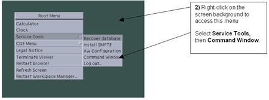
When the command window (shown in Illustration 25) displays, type su at the prompt, and press <Enter>.
At the password prompt, type the password provided by the local GE Healthcare Field Engineer or others listed in Section 1.4, and press <Enter>.
Illustration 25: Log In as Super User
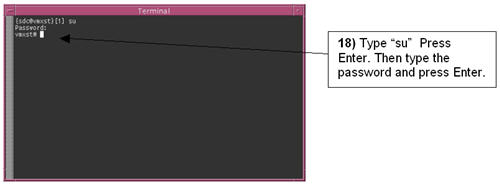
When the command window re-displays, type cp /etc/default/init /etc/default/init.orig at the prompt, and press<Enter>. This saves a copy of the init file in case a problem occurs during the edit process.
At the prompt, type vi /etc/default/init as shown in Illustration 26, and press <Enter>.
Illustration 26: Edit init File with vi Editor
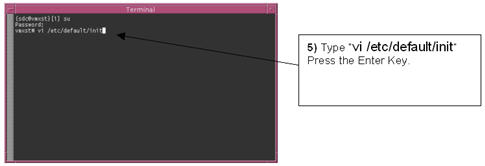
Search for TZ= by using the down arrow key to move the cursor from line to line in the file. (See Illustration 27.)
| NOTE: | This is a small file, so a visual search should be adequate. To have the system perform the search for the file, type /TZ followed by n for next match. Repeat this process, until this line is found: TZ=US/Set time zone. |
Illustration 27: Search for TZ=
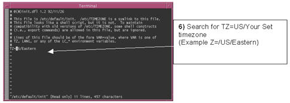
Using the arrow keys, position the cursor after the = sign, and press the <Shift> and <d> keys. This action deletes everything after the = sign. (See Illustration 28.)
Illustration 28: Remove Old Time Zone
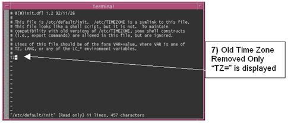
Press <a> on the keyboard once to put the vi editor in the insert (append) mode.
Using the time zone where your system is located, find the time zone string name and the new time zone setting columns in Table 5.
Choose the appropriate column for Daylight Saving Time (used in March) or Standard Time (used in November), and type the selected string name. (See Illustration 29.)
IMPORTANT: Time zone settings are case sensitive and must be entered exactly as written in the table. Do NOT press the Enter key after entering the time zone string.
| NOTE: | The example in Illustration 29is for Central Daylight Saving Time, Etc/GMT+5. |
Illustration 29: Set New Time Zone
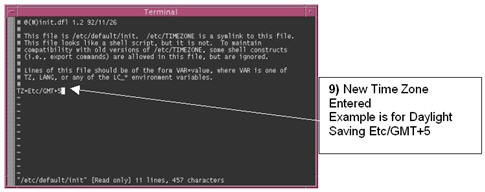
Press <Esc> on the keyboard to quit the insert (append) mode.
If a mistake is made while editing, type :q! (colon q exclamation) and press <Enter>. (See Illustration 30.) File edit will be cancelled and a prompt re-displays.
Illustration 30: Save New Setting
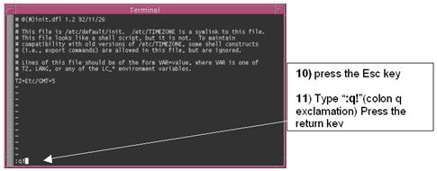
Return to Step 5.
At the prompt, type :wq! (colon wq exclamation), and press <Enter> to go to the bottom of the window. (See Illustration 31.) The file is saved and the prompt re-displays.
| NOTE: | In case of major editing mistakes, the old file can be
recovered as follows:
|
Illustration 31: Save Updates
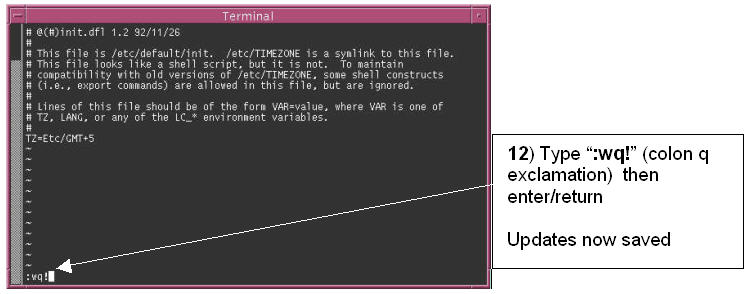
To shut down the System from the Service Desktop Manager, click [System Shutdown], and click [Yes] when the pop-up displays confirming system shutdown. (See Illustration 32.)
Illustration 32: Shutdown the System
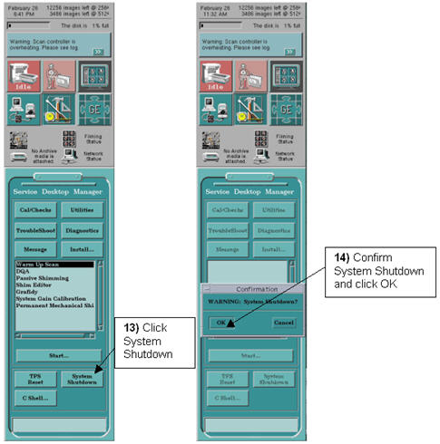
Turn the power off on the host computer, wait 30 seconds, and turn the host computer power back on. Wait for the system to boot and follow the normal login process.
From the Applications screen, click on the Tools icon to display the MR Service Desktop Manager. (See Illustration 33.)
Illustration 33: Open Service Manager Desktop
Right-click on the screen background, select Service Tools, then Command Window (shown in Illustration 34).
Illustration 34: Open Command Window
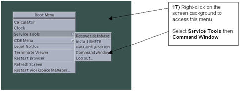
When the command window opens, type su at the prompt and press <Enter>.
With the system now at the Password prompt, type the password provided by the local GE Healthcare Field Engineer or others listed in Section 1.4, and press the <Enter>. The command window prompt will change. (See Illustration 35.)
Illustration 35: Enter Super User Mode
Type date and press <Enter> and check for the proper time zone setting when the Current Date/Time displays. The time zone should read Etc/GMT. (See Illustration 36.)
Illustration 36: View Time Zone Settings
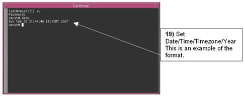
Check the date and time. (See Illustration 36.) The date and time should be correct. (See Time Setting in Table 6.)
If the settings are correct, this procedure is completed. Close the command window by typing exit and press <Enter> twice. Return the system to the Applications mode.
If the time zone setting is incorrect, return to Step 5 and repeat the procedure to this point.
If date/time is incorrect, continue with the next step.
To change the date and time, enter the value date mmddhhmm and press <Enter>. (See Illustration 37.)
Example: Feb 25, 9:49 pm: Type 02252149 (based on a 24-hour clock)
mm is 2-digit month, dd is 2-digit day, hh is 2-digit hour, and mm is 2-digit minute.
Illustration 37: Set Date and Time
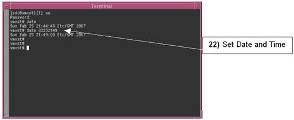
Type exit and press <Enter> twice to close the Command window.
To shut down the system from the MR Service Desktop Manager, click [System Shutdown], and click [Yes] when the pop-up displays confirming system shutdown. (See Illustration 38.)
Illustration 38: Shut Down the System
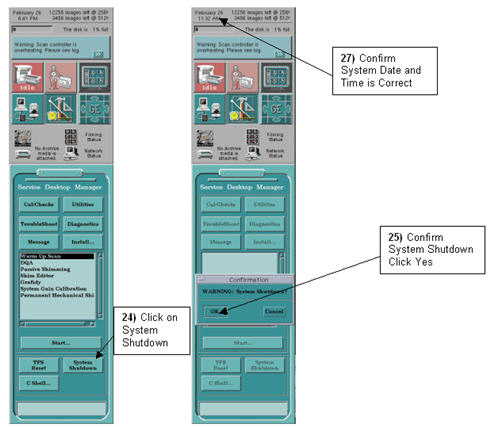
Turn the host computer power off, wait 30 seconds, and turn the host computer power back on. Wait for the system to boot and follow the normal login process.
Verify the proper Time and Date. (See Illustration 38.)
| NOTE: | If this procedure was performed before the required date, the system time will be +1 hour in March and -1 hour in November to compensate for the upcoming time change. |
Table 5: Time Zone Settings
| Country | Time Zone | Old TZ Setting | New TZ Setting for Daylight Saving Time | New TZ Setting for Standard Time |
| United States | Eastern Time | US/Eastern | Etc/GMT+4 | Etc/GMT+5 |
| United States | Central Time | US/Central | Etc/GMT+5 | Etc/GMT+6 |
| United States | Mountain Time | US/Mountain | Etc/GMT+6 | Etc/GMT+7 |
| United States | Pacific Time | US/Pacific | Etc/GMT+7 | Etc/GMT+8 |
| United States | Alaska Time | US/Alaska | Etc/GMT+8 | Etc/GMT+9 |
| United States | Aleutian Islands | US/Aleutian | Etc/GMT+9 | Etc/GMT+10 |
| Canada | Atlantic Time – Nova Scotia (most locations) | Canada/Atlantic | Etc/GMT+3 | Etc/GMT+4 |
| Canada | Atlantic Time - Northwest Territories | Canada/Atlantic | Etc/GMT+3 | Etc/GMT+4 |
| Canada | Eastern Time - Ontario and Quebec (most locations) | Canada/Eastern | Etc/GMT+4 | Etc/GMT+5 |
| Canada | Eastern Time - Thunder Bay, Ontario | Canada/Eastern | Etc/GMT+4 | Etc/GMT+5 |
| Canada | Eastern Time - Northwest Territories | Canada/Eastern | Etc/GMT+4 | Etc/GMT+5 |
| Canada | Central Time - Manitoba and West Ontario | Canada/Central | Etc/GMT+5 | Etc/GMT+6 |
| Canada | Mountain Time - Alberta, East British Columbia and West Saskatchewan | Canada/Mountain | Etc/GMT+6 | Etc/GMT+7 |
| Canada | Mountain Time - Northwest Territories | Canada/Mountain | Etc/GMT+6 | Etc/GMT+7 |
| Canada | Pacific Time – West British Columbia | Canada/Pacific | Etc/GMT+7 | Etc/GMT+8 |
| Canada | Pacific Time - Yukon | Canada/Yukon | Etc/GMT+7 | Etc/GMT+8 |
| Bahamas | Bahamas | Etc/GMT+4 | Etc/GMT+5 |
Table 6: Time Setting Notes
| Note for Setting Times In March for Daylight Saving Time | |
| If this procedure is performed before second Sunday in March: | Time Set +1 hour from current time |
| If this procedure is performed after or on the Second Sunday in March: | Set current time |
| Note for Setting Times In November for Standard Time | |
| If this procedure is performed before first Sunday in November: | Time Set -1 hour from current time |
| If this Procedure is performed after or on the first Sunday in November: | Set current time |